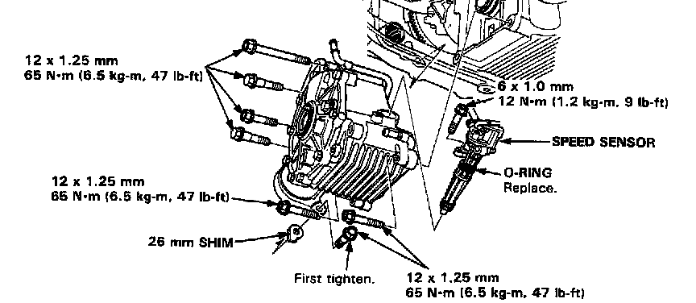
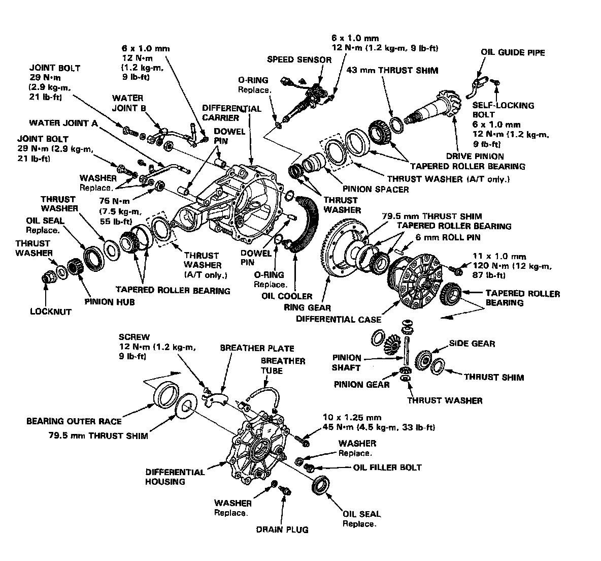
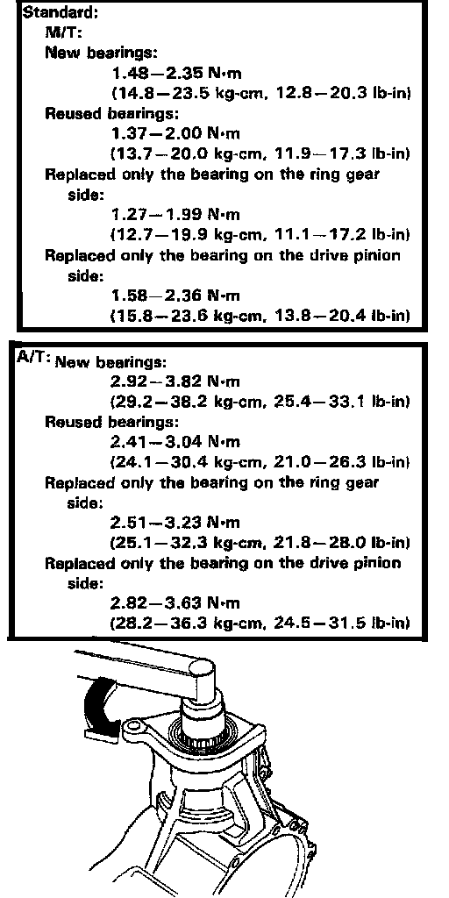

Differential Torque Data
Manual/Automatic Transmission Differential Mounting:

Manual/Automatic Transmission Differential Assembly:

Manual/Automatic Transmission Differential Drive Pinion Preload:



